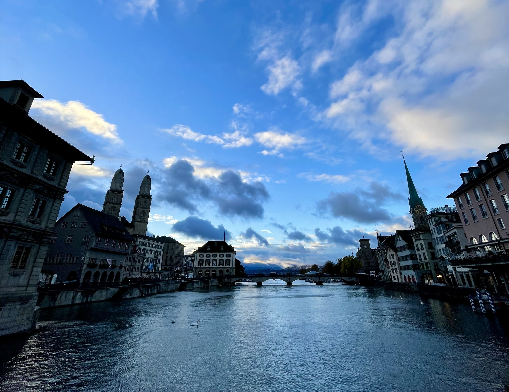
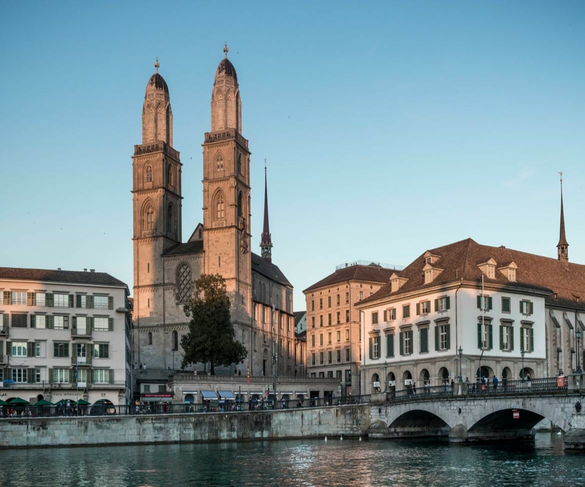
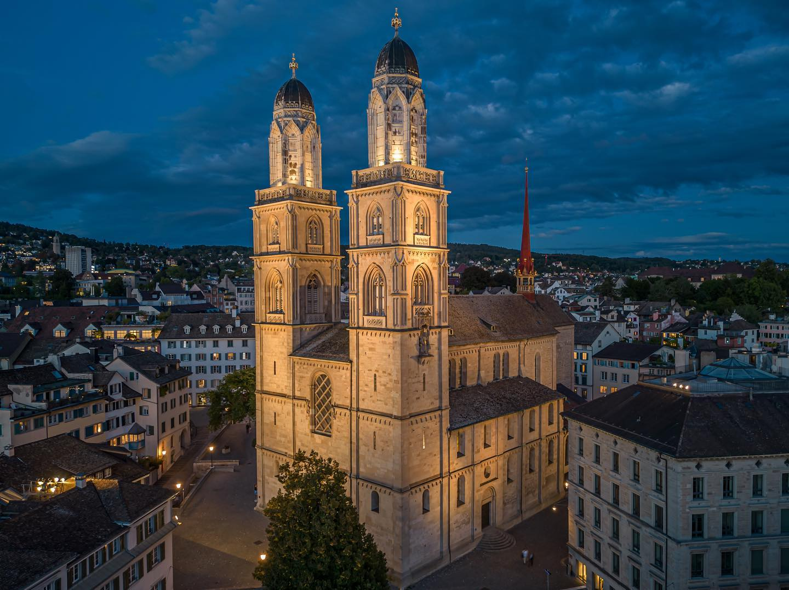
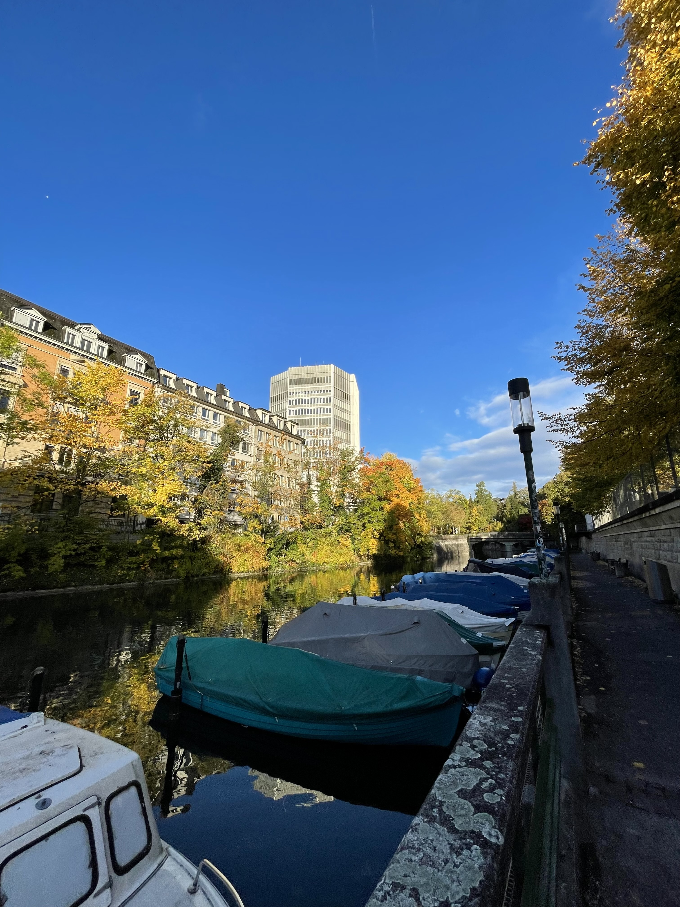

Sightseeing in Zurich: Here are the 10 must-sees!
Obviously, there are far more than 10 tourist attractions in Zurich, but this list points out the absolute highlights, nobody should miss. Visit the places in Zurich that tell the exciting history of the city, see the beautiful parks and green spaces in the middle of the Old Town and enjoy the breathtaking views from the numerous overlooks, and you will experience Zurich’s true character and beauty.

The Grossmünster in Zurich is an iconic Romanesque church that graces the city's skyline with its imposing twin towers and copper-crowned spires. With a history intertwined with Zurich's origins, this architectural masterpiece symbolizes the city's spiritual and cultural heritage. Inside, its serene interior is illuminated by gentle light filtering through stained glass windows, creating an atmosphere of contemplation. Ascending the towers rewards visitors with stunning panoramic views of Zurich, the Limmat River, and the Swiss Alps. The Grossmünster is a harmonious blend of history, spirituality, and architectural grandeur, making it a must-visit landmark in this vibrant Swiss city. (Be sure to get up to the top!!)
More →
The Grossmünster, an iconic symbol of Zurich's rich history and architectural heritage, stands proudly along the picturesque banks of the Limmat River. This majestic twin-towered church is a masterpiece of Romanesque architecture and an enduring testament to the city's deep-rooted spirituality.
Rising majestically against the backdrop of the Swiss Alps, the Grossmünster's imposing silhouette dominates the cityscape, drawing visitors and locals alike into its timeless embrace. Its twin towers, each topped with a green copper roof, create an image of exquisite symmetry that captivates the eye.
Stepping inside the Grossmünster, one is greeted by a serene atmosphere and an ambiance of reverence. The interior is adorned with elegant simplicity, emphasizing the beauty of clean lines and muted colors. As sunlight streams through the stained glass windows, it bathes the nave in a soft, ethereal glow, inspiring a sense of tranquility and reflection.
While the Grossmünster is a masterpiece of architecture, it is also deeply intertwined with Zurich's history and cultural identity. Legend has it that it was from this very site that Zurich's patron saints, Felix and Regula, were beheaded, leading to the establishment of the city's Christian foundations.
Climbing the Grossmünster's towers is a must for visitors, as it rewards them with breathtaking panoramic views of Zurich, the picturesque Old Town, the serene Limmat River, and the distant Alps. The vista offers a unique perspective on this vibrant metropolis, blending its ancient roots with modern vitality.
The Grossmünster, both a spiritual sanctuary and an architectural wonder, invites all who pass through its doors to immerse themselves in the rich tapestry of Zurich's history, culture, and breathtaking natural beauty. It stands as a symbol of enduring faith, a beacon of enlightenment, and a must-visit destination for anyone exploring this enchanting Swiss city.


Lake Zürich is a sparkling gem in the heart of Zürich, captivating with its serene beauty and enchanting surroundings. It was once above all a transport route. Today, it is a popular excursion point for swimming, boating, or picnicking on the lake's banks, offering a peaceful escape for both locals and visitors. Together with Lake Geneva, Lake Neuchâtel, Lake Constance, and Lake Lucerne, they are Switzerland’s “Big Five” in terms of lakes.
More →
Lake Zurich, or "Zürichsee" in German, is a breathtaking natural wonder that graces the heart of Zurich, Switzerland's largest city. This glimmering freshwater lake, shaped like a slender crescent, is a quintessential part of Zurich's identity and a testament to the city's harmonious coexistence with nature.
The best way to discover the Lake Zurich area is by boat trip. Most places around the shore are served by a regular boat service all year round. The undisputed favorites among the public are the two historic paddle steamers. From the “Gipfeli-Schiff” (early mornings) to the “Sonnenuntergangs-Schiff” (sunset sailings), there are all kinds of special excursions available. Musical trips and special tours on public holidays are all part of the program offered by the Lake Zurich shipping company.
The famous “golden coast” extends along the northern side of the lake, from Zollikon to Feldmeilen. This sun-soaked region is renowned for its low taxation rates and high property prices. It is, therefore, the stretch of coast where you can see the magnificent houses and villas of the upper echelons of society.
At the eastern end of the lake is the “rose town” of Rapperswil. In the public gardens here, you’ll find over 15,000 rose bushes blooming more than 600 different varieties. The lakeside promenade with its Mediterranean charms, the picturesque Old Town, and the medieval castle make this harbor town a popular place for excursions. For young visitors, Knie’s Children’s Zoo is high on their wish list.
Popular places to visit around Lake Zurich include the numerous swimming areas, the Alpamare in Pfäffikon – the largest covered water park in Europe – the sunny islands of Ufenau and Lützelau near Rapperswil, the wooden footbridge across the lake between Rapperswil and Hurden, the Baroque church in Lachen, the famous Lindt & Sprüngli chocolate factory in Kilchberg and, of course, the dynamic metropolis of Zurich, with all its many sights, the famous shopping mile of the Bahnhofstrasse and its vast range of cultural amenities.